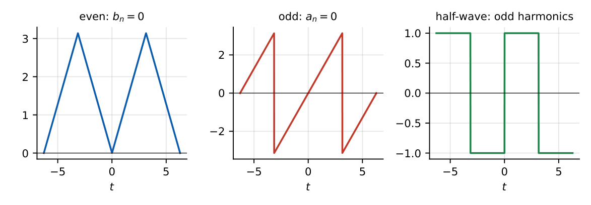
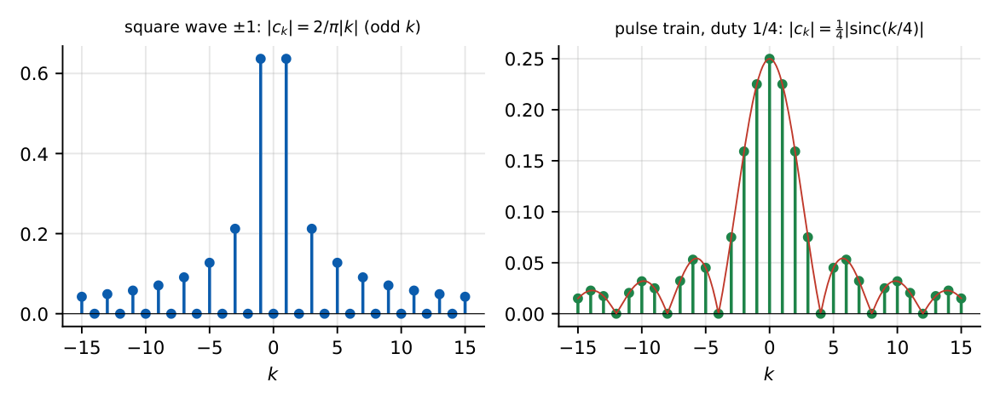
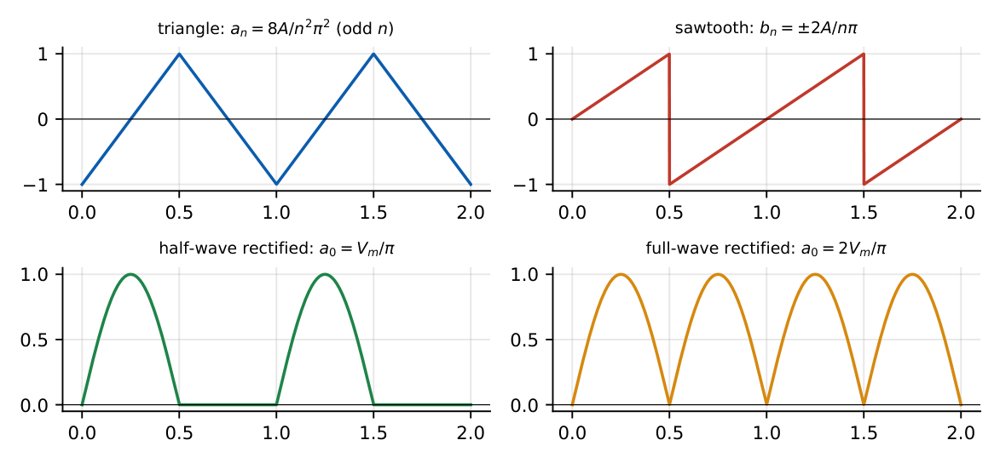
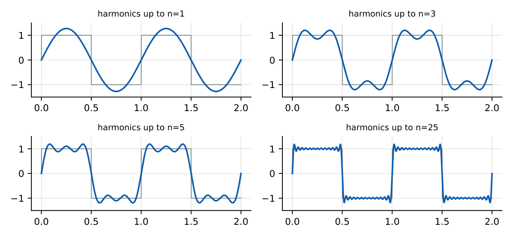

Fourier Series
In this chapter
- 18.1 Periodic signals
- 18.2 Trigonometric Fourier series
- 18.3 Exponential Fourier series
- 18.4 Fourier coefficients: worked cases
- 18.5 Symmetry properties
- 18.6 Even-symmetry and odd-symmetry simplification
- 18.7 Half-wave symmetry
- 18.8 Parseval’s theorem
- 18.9 Line spectra
- 18.10 Fourier series of common waveforms
Symmetry \(\Rightarrow\) which coefficients vanish; exponential coefficients of standard waveforms (square, pulse train, triangle); Parseval power; effect of time shift, differentiation, multiplication on coefficients. Calculation-light, concept-heavy.
18.1 Periodic signals
A signal with period \(T\) and fundamental frequency \(\omega_0=2\pi/T\) can be written as a sum of harmonics \(k\omega_0\) (Dirichlet conditions: finite number of maxima, minima, discontinuities per period; absolutely integrable over a period).
18.2 Trigonometric Fourier series
\(x(t)=a_0+\displaystyle\sum_{n=1}^{\infty}\left[a_n\cos n\omega_0t+b_n\sin n\omega_0t\right]\),
\(a_0=\dfrac1T\displaystyle\int_Tx\,dt\), \(a_n=\dfrac2T\displaystyle\int_Tx\cos n\omega_0t\,dt\), \(b_n=\dfrac2T\displaystyle\int_Tx\sin n\omega_0t\,dt\).
Compact form: \(x=a_0+\sum C_n\cos(n\omega_0t+\theta_n)\), \(C_n=\sqrt{a_n^2+b_n^2}\), \(\theta_n=-\tan^{-1}(b_n/a_n)\).
18.3 Exponential Fourier series
\(x(t)=\displaystyle\sum_{k=-\infty}^{\infty}c_ke^{jk\omega_0t}\), \(c_k=\dfrac1T\displaystyle\int_Tx(t)e^{-jk\omega_0t}dt\).
Relations: \(c_0=a_0\), \(c_k=\dfrac{a_k-jb_k}2\), \(c_{-k}=c_k^*\) (real \(x\)), \(|c_k|=\tfrac12C_k\).
18.4 Fourier coefficients: worked cases
\(x(t)=1+2\cos2\pi t+3\sin4\pi t\): \(a_0=1\), \(a_1=2\), \(b_2=3\); \(c_0=1\), \(c_{\pm1}=1\), \(c_2=\dfrac{3}{2j}=-j1.5\), \(c_{-2}=+j1.5\). Power \(=1+\dfrac{2^2+3^2}{2}=7.5=\sum|c_k|^2=1+1+1+2.25+2.25\). ✓
18.5 Symmetry properties
| Symmetry | Definition | Effect |
|---|---|---|
| Even | \(x(-t)=x(t)\) | \(b_n=0\); only cosines; \(c_k\) real |
| Odd | \(x(-t)=-x(t)\) | \(a_0=a_n=0\); only sines; \(c_k\) imaginary |
| Half-wave | \(x(t\pm T/2)=-x(t)\) | only odd harmonics (\(a_0=0\)) |
| Even \(+\) half-wave | only odd cosines | |
| Odd \(+\) half-wave | only odd sines | |
| Real \(x\) | \(|c_k|\) even in \(k\), \(\angle c_k\) odd |

Look at the waveform, not the integrals: subtract the mean and check (i) mirror symmetry about \(t=0\), (ii) point symmetry, (iii) whether the second half is the negative of the first half. This tells which coefficients are zero without any integration.
18.6 Even-symmetry and odd-symmetry simplification
For even \(x\): \(a_n=\dfrac4T\int_0^{T/2}x\cos n\omega_0t\,dt\), \(b_n=0\). For odd \(x\): \(b_n=\dfrac4T\int_0^{T/2}x\sin n\omega_0t\,dt\), \(a_n=0\). For half-wave symmetry, integrate over half a period and double.
18.7 Half-wave symmetry
\(x(t+T/2)=-x(t)\) implies \(a_n=b_n=0\) for even \(n\) (and \(a_0=0\)). A square wave, a triangle wave and a sinusoid (odd harmonics of a fundamental) all have this property.
18.8 Parseval’s theorem
\(P=\dfrac1T\displaystyle\int_T|x|^2dt=\sum_{k=-\infty}^{\infty}|c_k|^2=a_0^2+\dfrac12\sum_{n\ge1}(a_n^2+b_n^2)\).
18.9 Line spectra
A plot of \(|c_k|\) and \(\angle c_k\) versus \(k\omega_0\) (two-sided line spectrum) or of \(C_n,\theta_n\) (one-sided). The spectrum of a periodic signal is discrete, spaced by \(\omega_0=2\pi/T\).

18.10 Fourier series of common waveforms
1.4
| Waveform | Coefficients |
|---|---|
| Square wave \(\pm A\), odd, 50% duty | \(b_n=\dfrac{4A}{n\pi}\) (\(n\) odd), \(a_n=0\); \(c_k=\dfrac{-j2A}{\pi k}\) (\(k\) odd) |
| Rect pulse train \(A\), width \(\tau\), even | \(c_k=\dfrac{A\tau}{T}\sinc\!\left(\dfrac{k\tau}{T}\right)\), \(c_0=\dfrac{A\tau}T\) |
| Triangle \(\pm A\), even | \(a_n=\dfrac{8A}{n^2\pi^2}\) (\(n\) odd), \(b_n=0\) |
| Sawtooth \(-A\ldots A\), odd | \(b_n=\dfrac{2A}{n\pi}(-1)^{n+1}\) |
| Half-wave rectified sine (\(V_m\)) | \(a_0=\dfrac{V_m}{\pi}\), \(b_1=\dfrac{V_m}2\), \(a_n=\dfrac{-2V_m}{\pi(n^2-1)}\) (\(n\) even), rest 0 |
| Full-wave rectified sine | \(a_0=\dfrac{2V_m}{\pi}\), \(a_n=\dfrac{-4V_m}{\pi(n^2-1)}\) (\(n\) even), \(b_n=0\) |
| Impulse train \(\sum\delta(t-nT)\) | \(c_k=\dfrac1T\) for all \(k\) |

Square wave \(\pm1\): total power \(1\). Fundamental \(b_1=4/\pi\), power \(b_1^2/2=8/\pi^2=0.811\) (81.1%). Parseval over all odd harmonics gives \(\sum_{n\ \mathrm{odd}}\dfrac{8}{\pi^2n^2}=1\Rightarrow\sum_{n\ \mathrm{odd}}\dfrac1{n^2}=\dfrac{\pi^2}8\).

\(A=5\), \(\tau/T=0.25\): \(c_0=1.25\); \(c_1=1.25\sinc(0.25)=1.125\); \(c_4=1.25\sinc(1)=0\) (the first null). Nulls of the envelope at \(k\tau/T=\) integer.
Linearity: \(\alpha c_k+\beta d_k\). Time shift \(x(t-t_0)\): \(c_ke^{-jk\omega_0t_0}\). Time reversal: \(c_{-k}\). Differentiation: \(jk\omega_0c_k\). Integration (zero mean): \(c_k/(jk\omega_0)\). Multiplication \(xy\): \(\sum_mc_md_{k-m}\). Periodic convolution: \(Tc_kd_k\). Conjugate: \(c_{-k}^*\).
(i) At a discontinuity the series converges to the average of the left and right limits. (ii) Gibbs phenomenon: the partial sum overshoots a jump by about \(9\%\) of the jump height (\(1.179\) for a \(\pm1\) square wave) no matter how many terms; the overshoot narrows but does not shrink. (iii) Half-wave symmetry is about \(T/2\) shift, not about mirror symmetry. (iv) Shifting by \(t_0\) leaves \(|c_k|\) unchanged.
Q1. A real, odd, periodic signal has Fourier series containing (A) only cosine terms (B) only sine terms (C) DC and cosines (D) all terms.
Q2. A half-wave symmetric signal has (A) only even harmonics (B) only odd harmonics (C) DC only (D) no harmonics.
Q3. The exponential coefficient \(c_0\) of a signal equals (A) its RMS (B) its average (C) its peak (D) zero.
Answers: Q1 (B). Q2 (B). Q3 (B).
Q4. \(x(t)=1+2\cos2\pi t+3\sin4\pi t\). Its average power is (A) \(7.5\) (B) \(14\) (C) \(5\) (D) \(3.5\).
Q5. If \(x(t)\) has coefficients \(c_k\), then \(x(t-t_0)\) has coefficients (A) \(c_ke^{jk\omega_0t_0}\) (B) \(c_ke^{-jk\omega_0t_0}\) (C) \(c_{k-t_0}\) (D) \(c_k\).
Answers: Q4 (A). Q5 (B).
Q6. A square wave of amplitude \(\pm1\) has fundamental amplitude (two decimals).
Q7. The DC value of a half-wave rectified sine of peak \(5\) V is V (two decimals).
Answers: Q6: \(4/\pi=1.27\). Q7: \(5/\pi=1.59\).
Q8. For a real periodic signal: (A) \(c_{-k}=c_k^*\) (B) \(|c_k|\) is even (C) \(\angle c_k\) is odd (D) \(c_k\) is real.
Answers: Q8: (A), (B), (C).
(i) Using \(\frac1T\) for \(a_n\) instead of \(\frac2T\). (ii) Forgetting \(c_k=(a_k-jb_k)/2\) sign. (iii) Mistaking DC-offset removal for symmetry: half-wave symmetry needs zero mean. (iv) Sinc normalisation: with \(\sinc x=\sin\pi x/\pi x\) the pulse-train coefficient argument is \(k\tau/T\).
T1. Find \(c_k\) of \(x(t)=\cos(3\omega_0t)\). T2. Rect train \(A=2\), duty \(0.5\): value of \(c_0\) and of \(c_2\)?
Answers: T1: \(c_{\pm3}=\tfrac12\). T2: \(c_0=1\); \(c_2=1\cdot\sinc(1)=0\).
- \(a_0=\frac1T\int x\), \(a_n=\frac2T\int x\cos\), \(b_n=\frac2T\int x\sin\); \(c_k=\frac1T\int xe^{-jk\omega_0t}\), \(c_k=\frac{a_k-jb_k}2\).
- Even: cosines; odd: sines; half-wave: odd harmonics. Parseval: \(P=\sum|c_k|^2=a_0^2+\frac12\sum(a_n^2+b_n^2)\).
- Square \(\pm A\): \(b_n=4A/n\pi\) (odd); pulse train: \(c_k=\frac{A\tau}T\sinc(k\tau/T)\); triangle: \(8A/n^2\pi^2\).
- Shift: phase \(e^{-jk\omega_0t_0}\); derivative: \(jk\omega_0c_k\). Gibbs \(\approx9\%\).